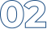

配水池新設詳細設計（土木・電気設計） 有効容量 1，600㎥ １池 ・ポンプ所新設詳細設計 計画給水量 1,740㎥／日
水と人の
豊かな暮らしを作る
私たち三水コンサルタントは、
三水（くらし・環境・活用）を軸に社会へ貢献いたします。
上下水道・水と環境の
総合コンサルタント
企業理念 3つの心構え
PHILOSOPHY
水と人の
豊かなくらしを
作る
三水（くらし・環境・活用）を軸に社会へ貢献

「信頼と和」をモットーとした顧客対応
次代のニーズを踏まえた総合的視点に立った提案
「上水道」「下水道」「工業用水」に由来する社名のもと、1974年の創業以来、水と環境に関わる社会基盤整備に携わってまいりました。上水道・下水道から、工業用水道・廃棄物・河川・官民連携まで、全国の自治体・公営企業の水インフラを調査・計画・設計で支えています。
水と環境の未来をデザインする。
3つの心構えのうち「三水」は、そのまま私たちの事業の柱です。理念を軸に、事業をご紹介します。
コンサルタント
サービス
三水コンサルタントでは、上水道、下水道、農・漁業集落排水、廃棄物、河川分野等での調査・計画・設計などのコンサルティング業務をおこなっています。また、土質調査、施工監理などの業務をサポートしております。
環境を守る
農山漁村の排水から廃棄物、河川まで。地域の水環境を次の世代へ引き継ぐ仕事です。
水を活用する
再生水や工業用水の活用、官民連携、海外での技術支援まで。水の価値を広げる仕事と、それらを支える土質調査・施工監理です。
- 再生水・工業用水等
再生水・工業用水道の計画・設計
- 官民連携業務・ウォーターPPP
PPP／コンセッション等の導入可能性調査・アドバイザリー
- 海外事業
海外の水インフラに関わる調査・技術協力
- 土質・施工管理等
土質調査、施工監理などのサポート業務
※ 9分野の振り分けと各分野の1行説明は、貴社ご確認のうえ確定します（理念原文「水を活用する工業用水や再生水」に合わせています）。
実績紹介
お知らせ
三水コンサルタントの最新情報やお知らせをお届けします。事業に関するご案内や取り組み内容などを随時更新しています。
-
2026.10.20お知らせ（株）水道産業新聞社発刊の水道産業新聞に弊社の記事「三水コンサルタントがグループ会社化」が掲載されました
-
2026.10.13お知らせ（株）日本水道新聞社発刊の日本下水道新聞および日本水道新聞に弊社の記事「首都圏の基盤強化へ」が掲載されました
-
2026.10.01お知らせ（株）水道産業新聞社発刊の水道産業新聞に社員 小池将悟の記事「第63回下水道研究発表会を振り返る」が掲載されました
-
2026.09.28お知らせ株式会社恵進コンサルの全株式取得（グループ会社化）に関するお知らせ
-
2026.09.09お知らせ（株）日本水道新聞社発刊の日本下水道新聞に弊社の記事「浸水リスクの見える化から、実効性ある内水対策へ」が掲載されました
数字で見る三水コンサルタント
- 創業1974年昭和49年・創業52年
- 社員数263名2026年7月現在
- 技術士66名令和8年9月1日現在
- 日経コンストラクション6位／7位下水道部門／上水道部門（2025 売上高ランキング）
- 拠点5支社大阪・東京・仙台・名古屋・福岡＋全国53のエリア事務所
※ 数値は貴社ご確認のうえ確定します（出典：会社紹介・採用「数字で見る三水」・日経コンストラクション2025）。